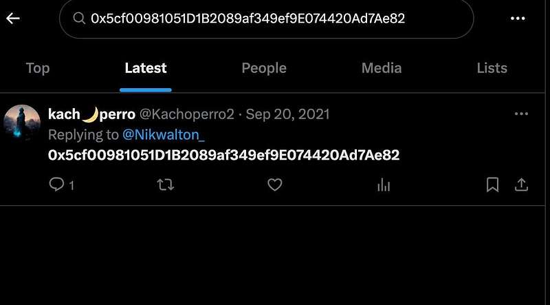

OSAK.COMMUNITY/kachoperro
OSAK.COMMUNITY/kachoperro
I feel burned v1.
by an anti-scammer
— — — — — — — — — — — — — — — — — — — — — — — — — — — — — — — — — — — — — —
God,
please have mercy on us all
— pleb
— — — — — — — — — — — — — — — — — — — — — — — — — — — — — — — — — — — — — —
kachoperro,
relying solely on past glory, reputation, or elite status can lead to disaster when opponents adapt and circumstances change.
— the Battle of Rocroi in 1643
— — — — — — — — — — — — — — — — — — — — — — — — — — — — — — — — — — — — — —
Please Read this before continuing:
***3/3/2026 Amendment: This is an amendment for accuracy and fairness based on additional on-chain verification completed after publication.***
SEE Amendment Summary of Medium Article below and see link here for new updated verison of this medium https://medium.com/@xubutrad/osak-cawmmunity-kachoperro-efd40f50d1bf ***
— — — — — — — — — — — — — — — — — — — — — — — — — — — — — — — — — — — — — —
to teh ppl of Osaka,
Keeping this message clear for everyone watching closely.
All ppl deserve transparency from those in control.
Control without accountability weakens trust over time.
Honest leadership knows when its moment has passed.
Open systems should never hinge on one person.
Power is safest when it is shared.
Ego should not outweigh the collective good.
Respect is earned through actions, not titles.
Real strength is shown in stepping aside.
Only then can a community fully thrive.
Give space for new voices to contribute.
In decentralized spaces, authority is temporary.
Voluntary transition shows integrity.
Every leader is ultimately a steward, not an owner.
Understanding this keeps movements healthy.
Passing responsibility forward can be an act of courage.
Trust grows when control is relinquished.
Holding keys forever invites doubt.
Empowerment begins with letting go.
Know when it’s time to move on.
Encourage others to step up.
Yield authority with dignity.
Step aside for the strength of the whole.
Kachoperro.is,
hes a whale with an agenda…
that agenda is to farm you…
to liquidate you…
remember since you R a community,
hold him accountable as one
hold teh light to his face
that is the power of the ppl
that is teh R way…
This is not a lore drop.
This is a forensic record you can verify line-by-line.
We anchor the entire investigation to three hard points
the OSAK contract,
the OSAK/WETH pool,
and the ded.eth wallet.
From there, we document what the chain will not argue with, four liquidity-removal transactions in 2023 credited to ded.eth (full txids, blocks, and UTC timestamps), and the surrounding routing footprint that follows those removals.
Then we trace the identity plumbing around kachoperro.eth, its historical custody events, its state being effectively neutralized (resolver/owner to dead), and the value-flow bridge that ties the kachoperro-side wallet (0x37b3…) directly to ded.eth through repeated ETH transfers across multiple years.
The conclusion we draw is not “trust me.”
It is…
if you believe narratives, you get farmed,
if you verify txids,
you get free.
— — — — — — — — — — — — — — — — — — — — — — — — — — — — — — — — — — — — — —
Please Read this before continuing:
***3/3/2026 Amendment: This is an amendment for accuracy and fairness based on additional on-chain verification completed after publication.***
SEE Amendment Summary of Medium Article below and see link here for new updated verison of this medium https://medium.com/@xubutrad/osak-cawmmunity-kachoperro-efd40f50d1bf
— — — — — — — — — — — — — — — — — — — — — — — — — — — — — — — — — — — — — —
the following are screenshots taken on 11/22/25 right after the release of X app locations and telegram user info below:


— — — — — — — — — — — — — — — — — — — — — — — — — — — — — — — — — — — — — —
So here is the proof I promised —
the research you, the holder, should have done,
but which has now been done for you.
Not out of anger, but out of love and love.
Take it as a lesson, not a wound.
Let it sharpen your discernment.
Let it strengthen your standards.
From this moment forward, move wiser.
Protect your trust.
Guard your community.
- XT
— — — — — — — — — — — — — — — — — — — — — — — — — — — — — — — — — — — — — —
On-chain Evidence
— — — — — — — — — — — — — — — — — — — — — — — — — — — — — — — — — — — — — —
1. kachoperro.eth wallet address
first we have to start at the beginning,
with a wallet kachoperro tried to burn and hide
that wallet is kachoperro.eth
here is a detailed history of the kachoperro.eth wallet
(i suggest to use ai):
FACT: Block → UTC timestamp mapping (viaeth_getBlockByNumberonhttps://eth.llamarpc.com)
BN 12,561,928 (HEX 0xbfae08) → 2021-06-03 13:55:03 UTCBN 15,387,461 (HEX 0xeacb45) → 2022-08-22 01:43:30 UTCBN 16,733,259 (HEX 0xff544b) → 2023-03-01 10:44:35 UTCBN 16,733,347 (HEX 0xff54a3) → 2023-03-01 11:02:23 UTCBN 16,733,356 (HEX 0xff54ac) → 2023-03-01 11:04:23 UTCFACT: ENS forensic timeline for kachoperro.eth (with txids + blocks + UTC)FACT: Identifier (node/namehash)
kachoperro.ethnamehash/node =
0x256d254e0c7774b2515300fcd0bfe433756ae31dfc17ca6e31c08e1c5545b8c3
FACT: 2021–06–03 — name becomes live and resolves (setup)
Block: 12,561,928 (0xbfae08)
UTC: 2021-06-03 13:55:03 UTC
TXID:0xdc8f2590bc6a2741f5b7ce1c6b3feb74d7bad0ab1bbd1b8d9a39c2c08b54a18b
Registry-layer events (ENS Registry):
Owner set (NewOwner) to 0x283af0b28c62c092c9727f1ee09c02ca627eb7f5 thenOwner set (NewOwner) to 0x37b3fae959f171767e34e33eaf7ee6e7be2842c3Resolver set (NewResolver) to 0x4976fb03c32e5b8cfe2b6ccb31c09ba78ebaba41Resolver-layer effects (address record):
At this setup moment, the address record was written so that:
kachoperro.ethresolved to0x37b3fae959f171767e34e33eaf7ee6e7be2842c3
BaseRegistrar (ENS “.eth NFT”) transfer events in the same tx:
0x000…0000 → 0x283af0b2… (mint)0x283af0b2… → 0x37b3… (immediate transfer)FACT: 2022–08–22 — custody transfer of the .eth NFTBlock: 15,387,461 (0xeacb45)
UTC: 2022-08-22 01:43:30 UTC
TXID:0x254b1d21e9ab13356b8cf5336c7e0f52a9043f8b4c4a52392768ec910952108f
BaseRegistrar transfer:
0x37b3fae9… → 0xb9f0d036395fb99fa31d8d7a49c495d5f20833deFACT: 2023–03–01 — resolver cleared (name stops resolving)
Block: 16,733,259 (0xff544b)
UTC: 2023-03-01 10:44:35 UTC
TXID:0xfa989753ffc522a2f96253bb8dce736fa867b0de08f10245c187758e35ea9d6d
ENS Registry:
Resolver set to 0x0000000000000000000000000000000000000000Direct consequence (FACT):
From this point, forward-resolution via ENS no longer works (no resolver).
FACT: 2023–03–01 — BaseRegistrar burn to dead
Block: 16,733,347 (0xff54a3)
UTC: 2023-03-01 11:02:23 UTC
TXID:0xc3b5476173107d7e5ffdd88f204d837f4d13fc1b08cecf16b26f6a1514361c28
BaseRegistrar transfer:
0xb9f0d036… → 0x000000000000000000000000000000000000deadFACT: 2023–03–01 — ENS Registry owner set to dead
Block: 16,733,356 (0xff54ac)
UTC: 2023-03-01 11:04:23 UTC
TXID:0x95c1346b7614ffab076ff49df425646b857ba4814589b67c7ddba44feb8e540a
ENS Registry:
Owner set to 0x000000000000000000000000000000000000deadFACT: The on-chain bridge your research used (why kachoperro.eth mattered)FACT: In your packet,kachoperro.eth’s historical resolved address (0x37b3…) has multiple direct ETH transfers with the seed wallet0x5cf00981051D1B2089af349ef9E074420Ad7Ae82(“ded.eth”), which is the wallet later analyzed for OSAK LP removals.
FACT: 0x37b3… ↔ 0x5cf0… direct ETH transfers (txid + UTC + amount)
Inbound to0x5cf0…from0x37b3…:
2020–11–17 18:38:45 UTC — 0x3937942f0761ed051de41ac2b656792f6ab207f342c6168e8ee3eea068b55bb9 — 0.25 ETH2021–04–29 19:05:42 UTC — 0x286ed0d382230daa404d5b09ed5c6c85ef61da9b4071e8aa42bbfea5346c609d — 0.255 ETH2021–06–11 17:49:03 UTC — 0x3de592863f720e47fdaa83cddeb929931ab1ac07054e1b7eefe0300d93ad96bd — 0.27 ETH2021–06–23 20:16:55 UTC — 0x1ee03f5be3eecc6746ab8ac66e9b1cde3f0ca6163e5f79d8eebcef1e577e7b4d — 0.3 ETH2021–07–02 10:02:28 UTC — 0xf7572cc769324e0e7110fc4c69828708962ddd19ef6b62300e3f0341d7115f2f — 0.053996475502780819 ETHOutbound from0x5cf0…to0x37b3…:
2021–06–12 00:18:12 UTC — 0x5adf58ff4221414568463e21417174c3b1296f9f438bc93d775eedc1afa4ee32 — 3.7277 ETH2021–06–23 22:59:00 UTC — 0x0e5f3aa5a50b7ec1d7b97f5f5a655f5991872f6e64cfddacf9f24757f23ae3d1 — 0.321373541239339966 ETHFACT (sum):
Total inbound (0x37b3… → 0x5cf0…) = 1.128996475502780819 ETH
Total outbound (0x5cf0… → 0x37b3…) = 4.049073541239339966 ETH
- FACT:
kachoperro.eth(node0x256d…b8c3) was configured at BN 12561928 (2021-06-03 13:55:03 UTC) in tx0xdc8f2590…b54a18b, setting resolver0x4976…and pointing the name to0x37b3…. FACT: The.ethNFT custody moved from0x37b3…to0xb9f0…at BN 15387461 (2022-08-22 01:43:30 UTC) via tx0x254b1d21…52108f. FACT: On 2023-03-01, the resolver was cleared to0x0at BN 16733259 (10:44:35 UTC) in tx0xfa989753…ea9d6d, then the BaseRegistrar token was burned to0x…deadat BN 16733347 (11:02:23 UTC) in tx0xc3b54761…361c28, and the ENS registry owner was set to0x…deadat BN 16733356 (11:04:23 UTC) in tx0x95c1346b…e540a.
FACT: In plain terms, the blockchain record shows that kachoperro.eth was created and made to work on June 3, 2021 (13:55:03 UTC), and at that moment it was configured to resolve to the wallet 0x37b3… (with the .eth name NFT minted and immediately transferred to that same wallet in the same transaction). FACT: On Aug 22, 2022 (01:43:30 UTC) the .eth NFT custody moved from 0x37b3… to 0xb9f0…. FACT: On Mar 1, 2023, the name was effectively “shut off”: first the resolver was cleared to 0x0 at 10:44:35 UTC, then the NFT was burned to the dead address at 11:02:23 UTC, and finally the ENS registry owner was set to the dead address at 11:04:23 UTC, meaning the name no longer resolves or can be managed normally. FACT: Your investigation uses this as a bridge because the wallet that kachoperro.eth originally pointed to (0x37b3…) has multiple direct ETH transfers with the seed wallet ded.eth (0x5cf0…), creating a verifiable on-chain linkage between the historical ENS identity pointer and the wallet later analyzed for OSAK liquidity removals.
— — — — — — — — — — — — — — — — — — — — — — — — — — — — — — — — — — — — — —
2.DED.ETH WALLET

the screenshot above references an eth wallet address posted by kachoperro himself on Sept 20,2021.
No mainstream ai back then.
its authentic.
this screenshot is so important
it became important evidence linking kachoperro to his own deception
that wallet address would explain so much…
FACT: What ded.eth showed in our research (copy-ready, with UTC times, txids, blocks, hashes)FACT: Wallet identity used throughout the packet
FACT:ded.ethwallet address =0x5cf00981051D1B2089af349ef9E074420Ad7Ae82.
FACT: Evidence source file (primary narrative + embedded TSV heads) =kacho hunt 3.txt, SHA256c0d974b667797e9dfcee27fc2012d6cf4f043a97a46b6afe0f14eb776b0a8b5e, size2,542,347bytes.
FACT: Evidence source file (OSAK remove-liquidity txid→date mapping + routing sink notes) =kacho hunt 3 thinking 2.txt, SHA256e757d37c5de40ef6829c762cb50c855878030812209c1d962d01fe14cfac2b49, size1,025,099bytes.
FACT: Label source file =kacho arkham wallets.txt, SHA256140e65fd9b903c497716e2020cc00857abd22a6875ee7ce8201534f0e129c6eb, size1,683bytes.
Timeline (high-signal events in chronological order)
FACT: 2020–2022 — direct ETH value-flow bridge (0x37b3 ⇄ ded.eth)
FACT: Our extracted edge_transfers.tsv shows 26 direct ETH transfers between:0x37b3fae959f171767e34e33eaf7ee6e7be2842c3 and0x5cf00981051d1b2089af349ef9e074420ad7ae82 (ded.eth).FACT: Time range covered by that table = 2020-11-17 18:38:45 UTC through 2022-12-15 20:01:59 UTC (Appendix B has all 26 rows).
FACT: Totals from that table:
FACT: Total IN to ded.eth from 0x37b3… = 9.110943192463862 ETH across 18 transfers.FACT: Total OUT from ded.eth to 0x37b3… = 11.30537180863482 ETH across 8 transfers.FACT: 2021–2025 — ENS identity maintenance activity by ded.eth (11 calls)
FACT: Our embeddedens_calls.tsvhead forded_eth_0x5cf0shows 11 ENS-related calls (reverse-registrar / resolver / name-wrapper) by ded.eth with UNIX timestamps that deterministically convert to UTC (Appendix A lists all 11 with txids + UTC).
FACT: 2023 — OSAK LP removal events (4 txs) + your reproduced UTC times
FACT (from our research log amounts table): The research packet records 4 OSAK LP “remove liquidity” events paying ded.eth:
2023-06-27: 5.235529480991319632 ETH
2023-08-31: 20.199927860890171527 ETH
2023-09-11: 22.265035366083258234 ETH
2023-10-23: 8.804110154162927894 ETH
FACT: Total = 56.504602862127677287 ETH
FACT (from your RPC reproduction output): You recovered exact block numbers + UTC times for each txid:
0xec99100265b60dcf6ff6e8ac70e3448c42cc3667b036980e6fde76e3f714a32e — BN 17572038 — 2023-06-27 17:01:47 UTC0x311cd39c6ab365c2a771403ae717379d845948ec87d45cb2c74f48c8f07bdf04 — BN 18036070 — 2023-08-31 17:32:35 UTC0xf0c388324b9879325366eb6ccb7033e4ef70dbb8a09d64cb81983d30f9a3b847 — BN 18114486 — 2023-09-11 17:05:59 UTC0x7ba7dedf08d6b49854c598071555687d0694eb26cc51d8b8a7307b9bcfeac315 — BN 18414569 — 2023-10-23 17:50:59 UTCFACT: Post-removal “where did the ETH go” routing footprint (addresses named in the packet)
FACT (from the packet’s sink list): The research narrative flags the following as major post-removal counterparties/sinks in the traced window:
FACT: 1inch router 0x1111111254eeb25477b68fb85ed929f73a960582FACT: Uniswap Universal Router 0x3fc91a3afd70395cd496c647d5a6cc9d4b2b7fadFACT: SynapseRouter 0x7e7a0e201fd38d3adaa9523da6c109a07118c96aFACT: NineInchRouter 0xa79882a5bcd455c6e582dad43f3f3f2c9c8264ebFACT: Blur Marketplace proxy 0xb2ecfe4e4d61f8790bbb9de2d1259b9e2410cea5FACT: Blur Blend proxy 0x29469395eaf6f95920e59f858042f0e28d98a20bFACT: Blur bidding/infra 0x0000000000a39bb272e79075ade125fd351887acFACT (from the packet’s plain-English interpretation): The packet describes this as looking more like “LP removal → router/aggregator/market infra hops” than “LP removal → direct CEX deposit.”
FACT: Contract creation scan result (ded.eth ENS evidence run)
FACT: In the embeddedcontract_creations.tsvsection forded_eth_0x5cf0, there are no rows (empty table), meaning this particular scan did not surface contract-creation events for ded.eth in the dataset that produced those TSVs.
Appendix A — ENS calls by ded.eth (all 11, with UTC, txid, destination)
FACT: Source is the embedded==== [RESEARCH_PATH_REDACTED] ====section insidekacho hunt 3.txt.
Format: UTC — txid — to — label — method_id2021-10-12 09:48:14 UTC —0x75f4d5938ae284a0289df74167febca545970789b52ef3474cefd90b99dab272—0x084b1c3c81545d370f3634392de611caabff8148— reverse-registrar —0xc47f0027
2021-10-12 09:52:13 UTC —0x1ffe6f0c3428928ab539a6dbf5e7214c9dff4c7fd6e7426399322a00ebba293a—0x084b1c3c81545d370f3634392de611caabff8148— reverse-registrar —0xc47f0027
2021-10-12 22:42:44 UTC —0x1b226e2b5256ce926baee967491469fee0a6cc7ce6a61eb7faeac49874ab75e6—0x4976fb03c32e5b8cfe2b6ccb31c09ba78ebaba41— resolver(0x4976...) —0x8b95dd71
2021-10-12 22:44:20 UTC —0x3df9f87bfb702c7e7fbd61ede03e576a1d2432ca82cfe0a99668ef7f7f90ff7f—0x084b1c3c81545d370f3634392de611caabff8148— reverse-registrar —0xc47f0027
2022-03-26 00:31:25 UTC —0x59c02cc84a6ee41743957d8bc5321828dcccfab57d1cf19e0de5a333e95367da—0x084b1c3c81545d370f3634392de611caabff8148— reverse-registrar —0xc47f0027
2023-06-20 22:09:35 UTC —0xed24a74cf795429db5f58d844fe621ce3d35ff930e5dde63f8c1d235462979bd—0x253553366da8546fc250f225fe3d25d0c782303b— name-wrapper —0xacf1a841
2023-06-20 22:09:59 UTC —0x58741695abc62657c2164124d828c05ce933988e1a5179ec1594b48d3e762d1f—0x4976fb03c32e5b8cfe2b6ccb31c09ba78ebaba41— resolver(0x4976...) —0x8b95dd71
2024-06-07 07:38:23 UTC —0x875b3a6be1a90198a845af0efc39d274457ff0754b6315db7f705d998e8ecfbe—0x253553366da8546fc250f225fe3d25d0c782303b— name-wrapper —0xacf1a841
2024-08-21 15:47:23 UTC —0xb945db85c9eaed8a6c3f8736543c0f3f1df2a871ca45e3d20c5f5dde7c1763d8—0x4976fb03c32e5b8cfe2b6ccb31c09ba78ebaba41— resolver(0x4976...) —0x8b95dd71
2024-08-21 15:47:59 UTC —0x9b5ebeb09fd384e19d0b8c8b09cbe40b6bdc9a727e72f504a2aac687f4b67cf9—0x4976fb03c32e5b8cfe2b6ccb31c09ba78ebaba41— resolver(0x4976...) —0x8b95dd71
2025-08-20 11:09:47 UTC —0x2f50ffd0d68a80db5f51e7bd56af7120e7e374cf47ead8e6904bd319083bf96f—0x253553366da8546fc250f225fe3d25d0c782303b— name-wrapper —0xacf1a841
Appendix B — Direct ETH transfers between 0x37b3…42c3 and ded.eth (all 26, with UTC, txid, ETH)
FACT: Source is embeddededge_transfers.tsvhead insidekacho hunt 3.txt.
Format:UTC — txid — from → to — ETH
2020-11-17 18:38:45 —0x3937942f0761ed051de41ac2b656792f6ab207f342c6168e8ee3eea068b55bb9—0x37b3… → 0x5cf0…— 0.25
2021-04-29 19:05:42 —0x286ed0d382230daa404d5b09ed5c6c85ef61da9b4071e8aa42bbfea5346c609d—0x37b3… → 0x5cf0…— 0.255
2021-06-11 17:49:03 —0x3de592863f720e47fdaa83cddeb929931ab1ac07054e1b7eefe0300d93ad96bd—0x37b3… → 0x5cf0…— 0.27
2021-06-12 00:18:12 —0x5adf58ff4221414568463e21417174c3b1296f9f438bc93d775eedc1afa4ee32—0x5cf0… → 0x37b3…— 3.7277
2021-06-23 20:16:55 —0x1ee03f5be3eecc6746ab8ac66e9b1cde3f0ca6163e5f79d8eebcef1e577e7b4d—0x37b3… → 0x5cf0…— 0.3
2021-06-23 22:59:00 —0x0e5f3aa5a50b7ec1d7b97f5f5a655f5991872f6e64cfddacf9f24757f23ae3d1—0x5cf0… → 0x37b3…— 0.321373541239339966
2021-07-02 10:02:28 —0xf7572cc769324e0e7110fc4c69828708962ddd19ef6b62300e3f0341d7115f2f—0x37b3… → 0x5cf0…— 0.053996475502780819
2021-07-03 20:34:41 —0xde67eef7167511e7f983be0f283724b9175ad5288bfc585e5676c45814f49382—0x37b3… → 0x5cf0…— 0.3
2021-07-03 22:05:37 —0x5994a7294248589d07c912a906b78bf6fef307ab72d8fc6797e43d0397773437—0x5cf0… → 0x37b3…— 0.606298267395481524
2021-07-27 19:55:06 —0x6dbf32426e59f8ec2c3db46970d49ad487064b9b0cc89bf80aead8226e9c3a5e—0x37b3… → 0x5cf0…— 0.013382820027836266
2021-08-04 19:17:31 —0x33b9dc88edb5fe07192e78dcad71e806351e1a395cbc3fc8247c13fb8e459b3a—0x37b3… → 0x5cf0…— 0.1
2021-08-04 19:25:00 —0x2198e57ebd01a8351b2343154455cdce04fa7c073af12a150bef60e0c039fbfb—0x37b3… → 0x5cf0…— 0.018563896933244227
2021-08-09 17:27:05 —0x11d90d689ee49d8eff820b3e92aaa3a51972d5da6cfcce11e38038ca370b0ae9—0x37b3… → 0x5cf0…— 4.0
2021-08-09 19:12:53 —0x273afa9641094f0cde4babd3b8a1a6873523902e61bb5cb9e9b3d67c760e8361—0x5cf0… → 0x37b3…— 2.2
2021-08-25 22:12:11 —0x42b1fb096159ed62e291fc5da74d75bc336521f6b0f0db44e4173d144e71ea01—0x37b3… → 0x5cf0…— 1.0
2021-08-25 22:24:35 —0x4af0bca135133557d2d88e6e887e15c24956c09ced73a4c868e8f14691240bd8—0x5cf0… → 0x37b3…— 1.0
2021-09-05 19:49:19 —0xaffd7dbb3f951248fface2f54a964a42fd2b0ad59e1c4489ec936168365df3c4—0x37b3… → 0x5cf0…— 0.05
2021-09-09 13:54:16 —0x18d1881ff9d1af154381ff1852ce3f9ef52ee2d4033a344bccc7ab981114c15e—0x37b3… → 0x5cf0…— 0.2
2021-10-08 23:41:26 —0x1e654ec60e2369315709c971eea21ba3bd3e8ab5d2d9e4d2ff84f238159ec3e9—0x5cf0… → 0x37b3…— 1.95
2021-10-12 09:39:06 —0x54f67d5ae6b59c25096fa110e5c9e553cdd05153224a1d164a8e1cfafd96d207—0x37b3… → 0x5cf0…— 0.2
2021-10-14 13:33:22 —0x13b2726a1fa7016fe232d3f24627a4ea87388ceb4f338b37d9317c8cd06a558c—0x37b3… → 0x5cf0…— 0.1
2021-10-14 22:05:16 —0x1f008885ae2f9707c88f884692145c5ad70978e8f5f5d5ee7d57a187c6226881—0x37b3… → 0x5cf0…— 0.5
2022-03-25 20:26:43 —0xbfccf52fd71d5168f5df504ce5efff09027d3ac1a54e3fa4f9193fc2c8a22f2d—0x37b3… → 0x5cf0…— 1.0
2022-03-26 01:59:21 —0x45c1733d4d3f4eaa948f6bf8106572641b5e196185721f0540e7e798181a9fa1—0x5cf0… → 0x37b3…— 1.0
2022-03-30 11:46:30 —0xe0fc49b06d48559ceeda683663db2b412cafc3566692a506d811747527c5ba99—0x37b3… → 0x5cf0…— 0.5
2022-12-15 20:01:59 —0x11d47c511bc64a862e1c1c76b800cb5494b9610aae43ee53d0e5daae3632c334—0x5cf0… → 0x37b3…— 0.5
FACT: Totals derived from this list:
FACT: IN to ded.eth = 9.110943192463862 ETH (18 transfers)
FACT: OUT from ded.eth = 11.30537180863482 ETH (8 transfers)
Appendix C — OSAK LP removals credited to ded.eth (txid + block + UTC + amount)
FACT: txid → (block, UTC) (your reproduced RPC output)
0xec99100265b60dcf6ff6e8ac70e3448c42cc3667b036980e6fde76e3f714a32e — BN 17572038 — 2023-06-27 17:01:47 UTC0x311cd39c6ab365c2a771403ae717379d845948ec87d45cb2c74f48c8f07bdf04 — BN 18036070 — 2023-08-31 17:32:35 UTC0xf0c388324b9879325366eb6ccb7033e4ef70dbb8a09d64cb81983d30f9a3b847 — BN 18114486 — 2023-09-11 17:05:59 UTC0x7ba7dedf08d6b49854c598071555687d0694eb26cc51d8b8a7307b9bcfeac315 — BN 18414569 — 2023-10-23 17:50:59 UTCFACT: date → ETH amount (as written in the research packet)
2023-06-27: 5.235529480991319632 ETH
2023-08-31: 20.199927860890171527 ETH
2023-09-11: 22.265035366083258234 ETH
2023-10-23: 8.804110154162927894 ETH
FACT: Total = 56.504602862127677287 ETH
Layman summary (novice-friendly)
FACT: During our research, ded.eth is not just “a wallet that held tokens.”FACT: It showed three concrete, time-stamped behaviors:
FACT: It actively managed ENS identity plumbing (reverse-registrar + resolver + name-wrapper) across 2021 → 2025 (Appendix A).
FACT: It had repeated direct ETH transfers back-and-forth with 0x37b3…42c3 (the address our kachoperro.eth section identified as the historical resolved/owner-side wallet) from 2020-11-17 → 2022-12-15 (Appendix B).FACT: It received four large OSAK LP “remove-liquidity” payouts in 2023 totaling 56.504602862127677287 ETH, and you have now independently reproduced the block numbers + exact UTC times for each tx (Appendix C).
— — — — — — — — — — — — — — — — — — — — — — — — — — — — — — — — — — — — — —
3. FACTS: OSAK token identifiers (Ethereum mainnet)
FACT: OSAK (Ethereum) contract = 0xa21Af1050F7B26e0cfF45ee51548254C41ED6b5c.FACT: OSAK/WETH Uniswap V2 pool = 0x05c024b441d2c288c2729b484bd4bcef3596aa51.FACT: Docs claim: “The contract is a simple ERC20 that cannot be adjusted or changed or rugged.” (This is their claim.)
FACT: Etherscan token page lists max supply =999,999,990,000,000 OSAKand holders around12.4K.
FACTS: Current status snapshot (up-to-date per web sources)
FACT: GeckoTerminal (OSAK/WETH, Uniswap V2) shows roughly:
Price ≈ $0.00000001839Liquidity ≈ $488.7K24h volume ≈ $2.7K (16 txns)Holders ≈ 12.5KAge ≈ 2 yearsFACT: Etherscan token market section shows onchain market cap and 24h volume numbers (values change continuously).
FACTS: What our research observed on-chain about OSAK
1) FACT: OSAK LP removals that paidded.eth(0x5cf0…) — amounts + totals SHA256=c0d974b667797e9dfcee27fc2012d6cf4f043a97a46b6afe0f14eb776b0a8b5e.
FACT: “4 removals that paid 0x5cf0” with exact amounts:
2023–06–27: 5.235529480991319632 ETH2023–08–31: 20.199927860890171527 ETH2023–09–11: 22.265035366083258234 ETH2023–10–23: 8.804110154162927894 ETHTotal =56.504602862127677287 ETH
(Verbatim excerpt exists in the file near the “internal-trace results” section.)
2) FACT: Same 4 LP-removal txids — block + exact UTC time (your RPC reproduction)
These are the lines you just produced via JSON-RPC:
FACT: 0xec99100265b60dcf6ff6e8ac70e3448c42cc3667b036980e6fde76e3f714a32e — BN 17572038 — 2023-06-27 17:01:47 UTCFACT: 0x311cd39c6ab365c2a771403ae717379d845948ec87d45cb2c74f48c8f07bdf04 — BN 18036070 — 2023-08-31 17:32:35 UTCFACT: 0xf0c388324b9879325366eb6ccb7033e4ef70dbb8a09d64cb81983d30f9a3b847 — BN 18114486 — 2023-09-11 17:05:59 UTCFACT: 0x7ba7dedf08d6b49854c598071555687d0694eb26cc51d8b8a7307b9bcfeac315 — BN 18414569 — 2023-10-23 17:50:59 UTC3) FACT: Router/infra footprint observed in the post-removal tracing lane SHA256=e757d37c5de40ef6829c762cb50c855878030812209c1d962d01fe14cfac2b49.FACT: The trace lane prints these hit counts (as logged):
universal_router 46
oneinch 169
blur 2
weth 11
osak 2
pair 2
uni_v2 0
(This is a logged aggregation in the file; it is not a guarantee of final sinks, but it is a measured footprint.)
Warnings discovered in research (and still relevant today)
Warning 1 — “Liquidity risk is real, even if the ERC-20 code is immutable”
FACT: Osaka docs claim the ERC-20 “cannot be adjusted or changed or rugged.”
INFERENCE: Even if token code is fixed, holders can still be harmed by liquidity events (LP withdrawal), whale behavior, and thin volume — which our dataset explicitly shows (56.5046 ETH removed to a single wallet across 4 events) and current stats reinforce (low 24h volume).
Warning 2 — Repeated, large LP withdrawals to ded.eth (0x5cf0…) are a measurable “risk indicator”FACT: Our log records 4 LP removals paying0x5cf0…totaling56.504602862127677287 ETH.
FACT: You reproduced the txids + blocks + exact UTC times for the same 4 events (Appendix C below).
INFERENCE: This is consistent with “LP provider cashing out in chunks.” Whether it’s “scam” intent is not proven by this fact alone — but it is a risk signal for liquidity stability.
Warning 3 — Thin trading activity vs valuation increases slippage/manipulation risk
FACT: GeckoTerminal shows ~$488.7Kliquidity and ~$2.7K24h volume for the main OSAK/WETH V2 pool at the time of crawl.
INFERENCE: Low volume + moderate liquidity makes it easier for price to move on relatively small orders (slippage), and makes exit harder during stress.
Warning 4 — Cross-chain variants + bridge adapter = added complexity risk for novices
FACT: Osaka docs list multiple chain contracts and state an “OFT Bridge Adapter” on Ethereum that holds OSAK to facilitate bridging.
INFERENCE: Cross-chain listings increase the risk of: buying the wrong chain asset, confusing contract addresses, and additional bridge/adapter contract risk (even if the base ERC-20 is immutable).
Warning 5 — “Forever hold” narratives are not the same as verifiable, enforced locks
FACT: the launch narrative framing LP safety as being held by a “Ryoshi” address (a social claim), not a formal timelock contract (technical enforcement). (This is from the uploaded analysis narrative, not a chain primitive.)
— — — — — — — — — — — — — — — — — — — — — — — — — — — — — — — — — — — — — —
Appendix
Appendix A — Canonical contracts (public sources)
OSAK (Ethereum): 0xa21Af1050F7B26e0cfF45ee51548254C41ED6b5cOSAK/WETH Uniswap V2 pool: 0x05c024b441d2c288c2729b484bd4bcef3596aa51Docs claim “cannot be … rugged” (project claim):
Appendix B — Evidence file hashes (from your uploads)
SHA256 c0d974b667797e9dfcee27fc2012d6cf4f043a97a46b6afe0f14eb776b0a8b5eSHA256e757d37c5de40ef6829c762cb50c855878030812209c1d962d01fe14cfac2b49SHA256 c89eb7be29b0a8023c8e8f604a89f85802328abd9b29706b69484ce6edf735ccAppendix C — OSAK LP removal events paying ded.eth (txid + block + UTC + amount)2023–06–27 17:01:47 UTC — BN 17572038 — 0xec99100265b60dcf6ff6e8ac70e3448c42cc3667b036980e6fde76e3f714a32e — 5.235529480991319632 ETH2023–08–31 17:32:35 UTC — BN 18036070 — 0x311cd39c6ab365c2a771403ae717379d845948ec87d45cb2c74f48c8f07bdf04 — 20.199927860890171527 ETH2023–09–11 17:05:59 UTC — BN 18114486 — 0xf0c388324b9879325366eb6ccb7033e4ef70dbb8a09d64cb81983d30f9a3b847 — 22.265035366083258234 ETH2023–10–23 17:50:59 UTC — BN 18414569 —0x7ba7dedf08d6b49854c598071555687d0694eb26cc51d8b8a7307b9bcfeac315— 8.804110154162927894 ETH
Total removed to0x5cf0…= 56.504602862127677287 ETH (perkacho hunt 3.txt).
— — — — — — — — — — — — — — — — — — — — — — — — — — — — — — — — — — — — — —
Ending summary
— — — — — — — — — — — — — — — — — — — — — — — — — — — — — — — — — — — — — —
Hello frens,
If you read nothing else, remember what this piece actually did,
it reduced the story to artifacts.
We pinned OSAK to its contract and pool, pinnedded.ethto four 2023 liquidity-removal txids (with blocks + UTC times), and pinned the “kachoperro” thread to an ENS trail that ends in silence—but leaves behind a measurable bridge: direct ETH transfers between0x37b3…and0x5cf0…that you can check yourself. Nothing here requires belief. Only replication.
[Inference] Whether you call it a scam, a farm, or a “strategy,” the risk signal is the same for a holder: liquidity can leave, volume can thin, exits can widen, and the community pays the spread. The only defense is shared verification and shared memory — so the next time someone sells you a myth, you ask for a txid.
GOD BE WITH YOU!

— — — — — — — — — — — — — — — — — — — — — — — — — — — — — — — — — — — — — — -
3/3/2026
Amendment Summary for the Medium Article
— — — — — — — — — — — — — — — — — — — — — — — — — — — — — — — — — — — — — —
This is an amendment for accuracy and fairness based on additional on-chain verification completed after publication.
First, I am correcting one important overreach in my framing.
I did overlook the farming mechanics in my haste and I will own it plainly.
Yes the on chain pattern for the ded wallet we traced fits a normal farm exit in 3 of 4 cases. The OSAK LP removals land 3 to 16 blocks after SR1 Withdrawn events which is exactly what you would expect when someone unstakes or exits LP and then removes liquidity. Why this matters is because it means LP removal by itself is not proof of a rug and it would be dishonest to frame it that way. So farming explains a big piece of what you both are pointing at and I am correcting that publicly. Thanks for the catch and I will add a correction update note to my medium at the top.
Still where I do not agree is calling the Medium concerns ridiculous because the core risk is not LP farming equals scam. That statement was a piece not the whole point of the medium. The bigger concern is centralization and single point of failure custody and it is visible in OSAK even if every LP move is normal yet OSAK is marketing itself as a Rebirth Of True Decentralization.
The core problem is the setup is dangerously centralized and that makes outcomes steerable in a way that does not require an admin backdoor and that is where kachoperro being active in the environment matters.
I also want to address why the Ryoshi wallet had credibility in the first place. It was treated as a Ryoshi wallet because it was linked to him while he was actively using it in Shiba and that link is what gave people credibility to trust it. Why this matters is that we are now years later Ryoshi is not actively behind anything publicly and nobody can prove who controls that key today so regardless of the origin story that wallet is now a single point of failure and trust is being asked of an address rather than a mechanism.
There are discrepancies between the projects own words and what is actually on chain. The OSAK launch text frames LP as being sent to an old SHIBA Ryoshi wallet for approval and a forever hold and frames the farm as locks until the end of the farm term. Why this matters is because readers interpret that as a trustless guarantee. On chain LP burned is not true in the strict sense and the guys behind this know this. The LP was minted to the deployer and later transferred deployer to Ryoshi wallet so it is custody not burn. Why this matters is because custody is a key risk. If the controlling key moves or is compromised the guarantee disappears.
The centralization severity is extreme. Burn addresses hold about 0.000028 percent of LP while the Ryoshi wallet EOA holds about 99.48 percent. Why this matters is simple. Liquidity safety depends on one wallet never moving. That is not burned. That is please trust this one address forever and it creates a single point of failure.
The Mephisto Medium narratives implies broad distribution plus burn or unclaimed handling but the actual on chain Paperdrop outcome is re centralized. About 96.1786 percent of the 30 percent airdrop bucket flowed back to the controller or deployer with only about 3.82 percent reaching claimers. Stop and read that again. The OSAK Medium text itself also mixes burn remaining 23 percent messaging around unclaimed distribution. Why this matters is because it can look community wide while most of the supply remains effectively controlled by a small set of hands and that increases manipulation risk even if nobody is cheating.
On incentives SR2 is not an LP rug vector but it is custodial for rewards. recoverERC20 for OSAK and WETH succeeds on SR2 which means the SR2 owner key can pull reward token balances that accrue or land there. Why this matters is that it introduces another key based point of control and a compromise or abuse of that owner role can siphon rewards and influence incentives even if LP itself cannot be drained from SR2.
On monitoring approvals the traced removals used removeLiquidityETHWithPermit so there may be no prior approval breadcrumb. Why this matters is that approval watching can miss the true moment of risk and the real signal becomes router removeLiquidity calls themselves not an approve event.
On the kachoperro and ded wallet the wallet we traced signed multiple removeLiquidityETHWithPermit calls and extracted about 56.50 WETH across four removal events. This is not proof of scam. Why this matters is it is proof of capacity and influence in thin liquidity. The wallets big LP moves can be explained as farming and I am not pretending that alone proves anything but it still matters because it shows one wallet had the size to farm at scale pull liquidity receive the ETH and keep trading through routers and aggregators.
In a market where LP custody is basically one wallet and supply flows are tight a large operator does not need an admin backdoor to manipulate outcomes. Timing liquidity pulls and swaps around thin liquidity moments is enough to make price action feel managed and that is the structural risk I am flagging.
Bottom line I am saying the system is structurally centralized in ways that can be steered by a small number of keys and wallets and that risk exists even if all LP activity is normal farming while Kacho and co sit silent in the mix.
Do you even know why I am here digging into OSAK. I was not looking for OSAK. I was tracing kacho and OSAK is where the trail brought me.
Either way may God keep us to truth.